About
Four craft beer enthusiasts. One bar. Everyone at this table thinks they have the best taste — and tonight they're going to prove it. In Flights of Fancy, players compete to build the most impressive tasting flight, drafting dice to define each beer's color profile, flavor, and glassware before anyone else can claim what they need.
Each round, players take turns drawing dice from the supply — two per player — then rolling the full lot to form the shared pool. Red dice show color profiles, blue show flavor elements, green show glassware. Once the pool is set, players draft from it to fill the four slots on their flight board. Match color and flavor to a beer on the tap list and it's worth five points. Get the glassware right too and it jumps to ten. Grab a victory coaster from the limited pile on the table and add five more — but there's only one per style, so hesitate and it's gone. A skull glass is an automatic five points regardless of what's in it (nobody argues with a person drinking from a skull). A spill makes a beer worthless — unless you know what you're doing.
Everyone at the bar has a secret identity — a character with their own taste preferences, hidden bonuses, and options nobody else has access to. The Klutz, for instance, turns every spill into an advantage. Watch what your opponents are drafting. Someone taking dice they shouldn't want is telling you something. Figure it out fast enough and you can cut off their best pour before they finish it.
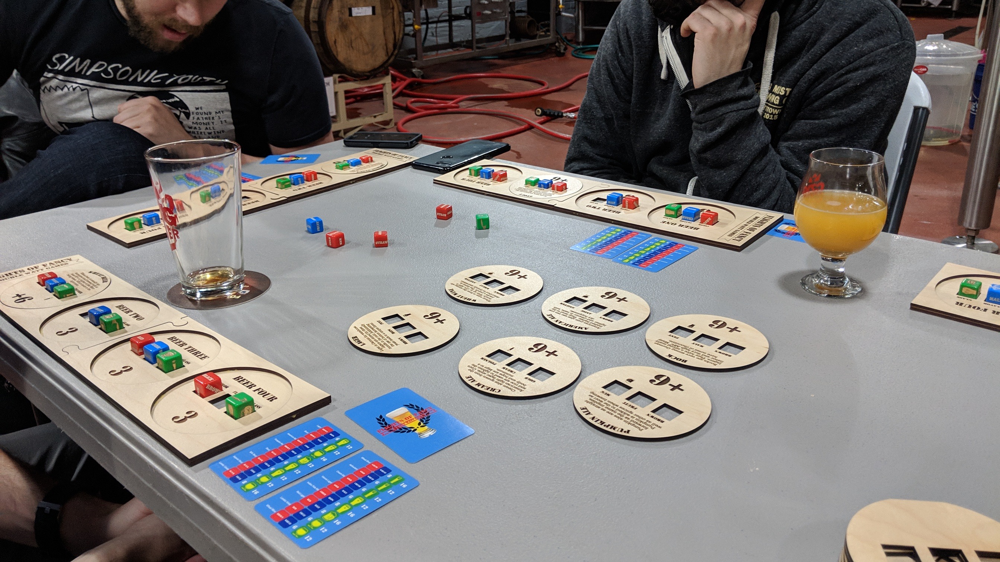
Components
- 4 wooden flight boards
- 1 dice bag
- 16 red color dice
- 16 blue flavor dice
- 16 green glassware dice
- 14 secret identity cards
- 4 tap list cards (beer scores & rules reference — one per player)
Appearances
Flights of Fancy has been playtested and demoed at:
- Boston FIG
- Granite Gaming Summit
- PAX Unplugged Unpub
- Every brew pub that wouldn't kick us out
Explainer
Thank you to lonely man boardgames for this gorgeous explainer.

Gallery
See some of the places Flights of Fancy has been and how it's developed.
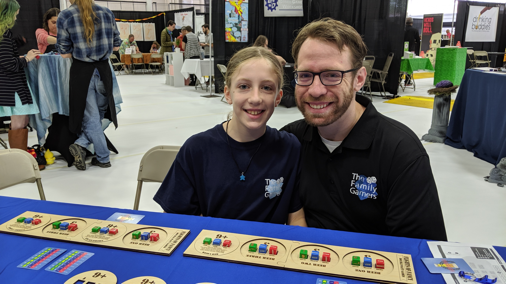
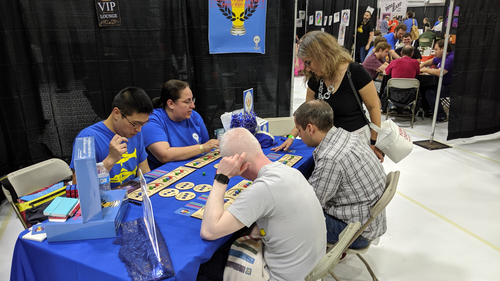
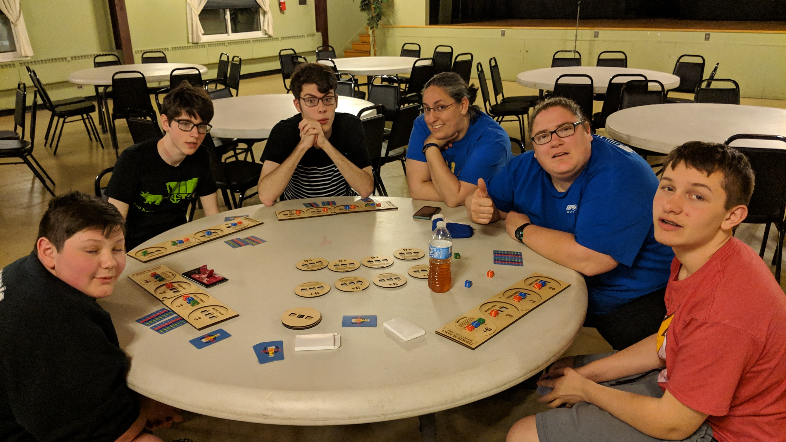
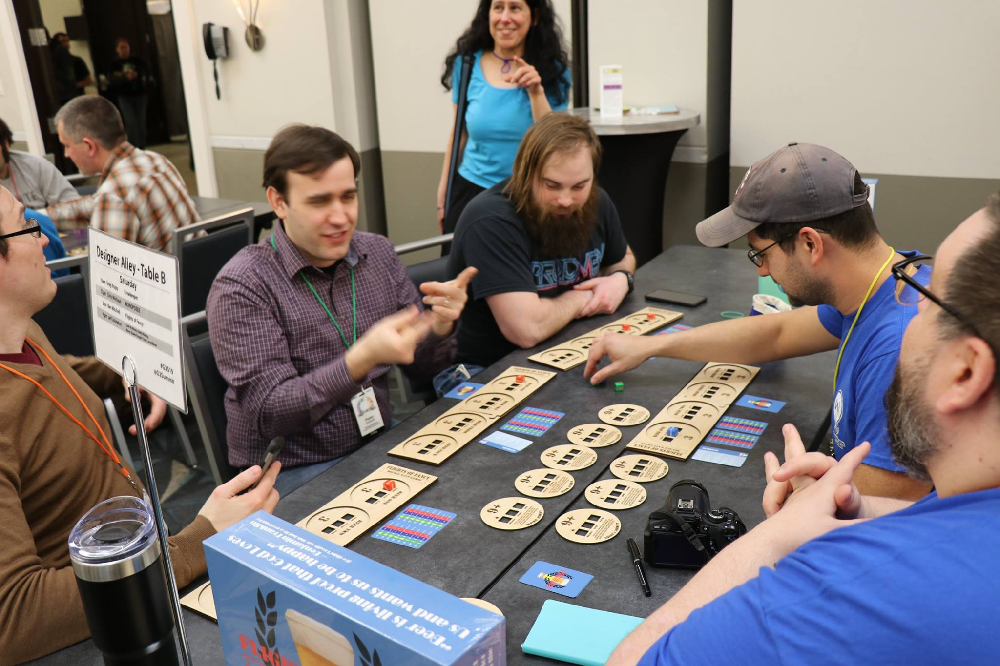
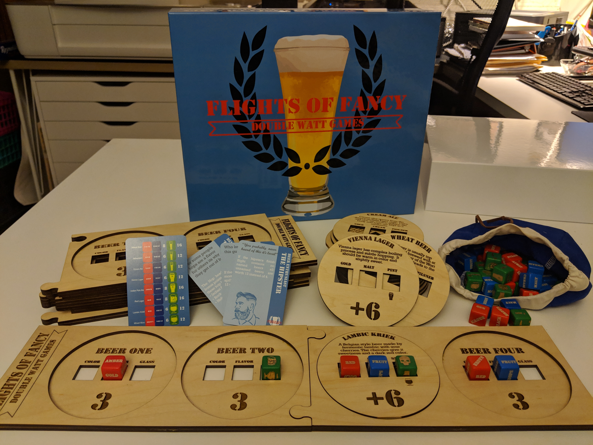
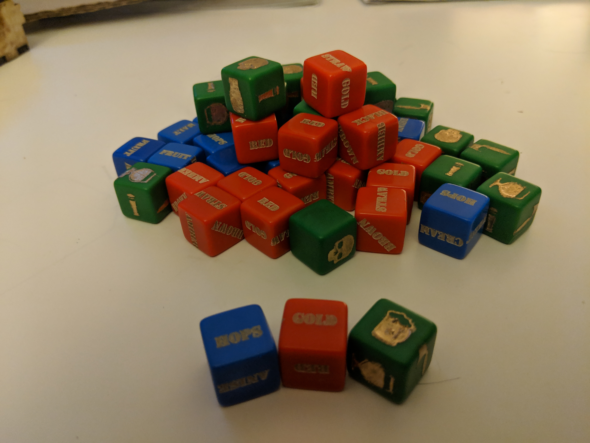
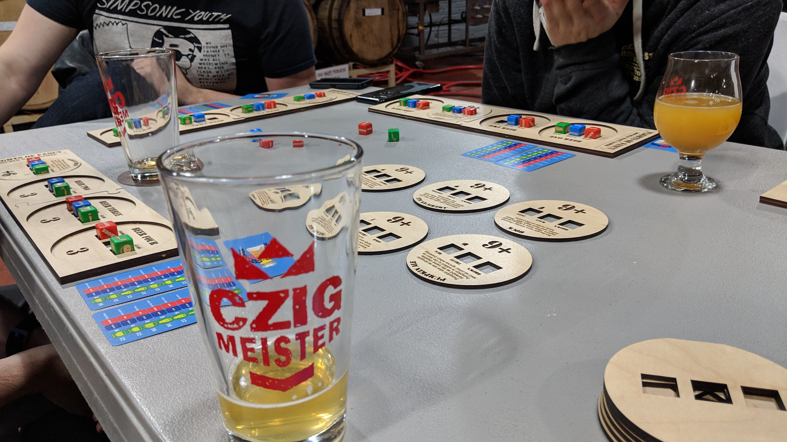

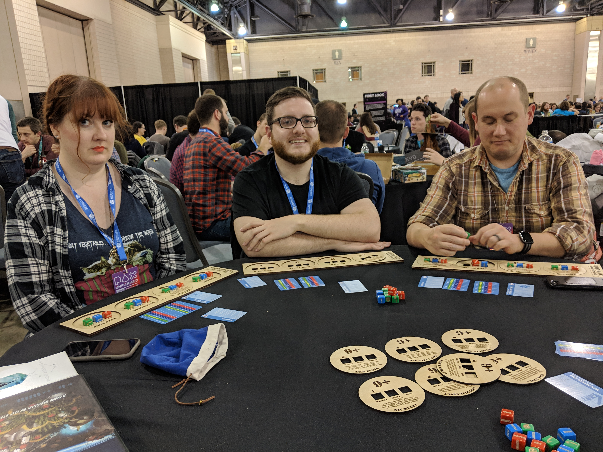
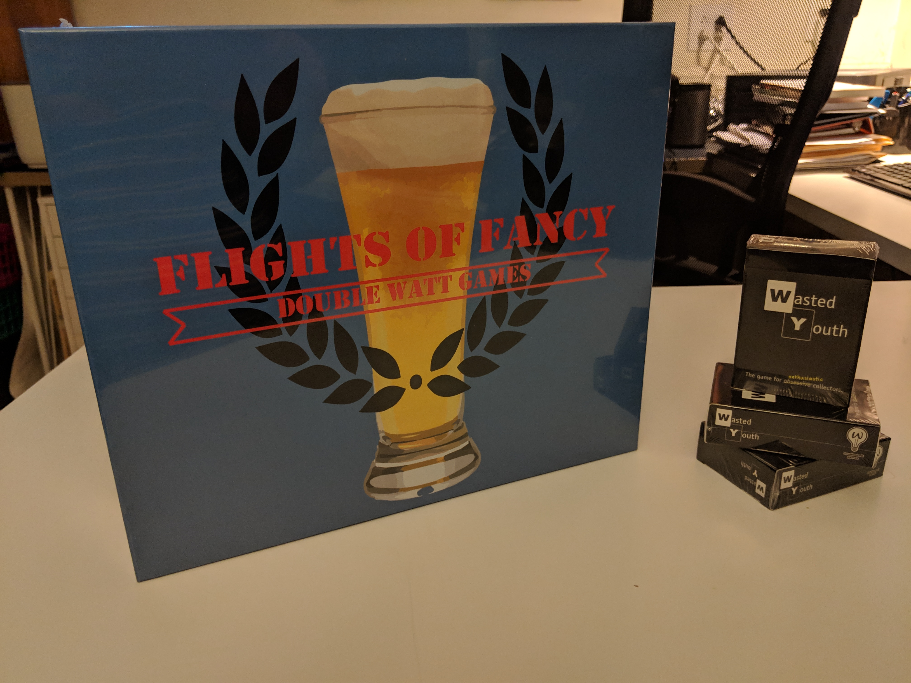
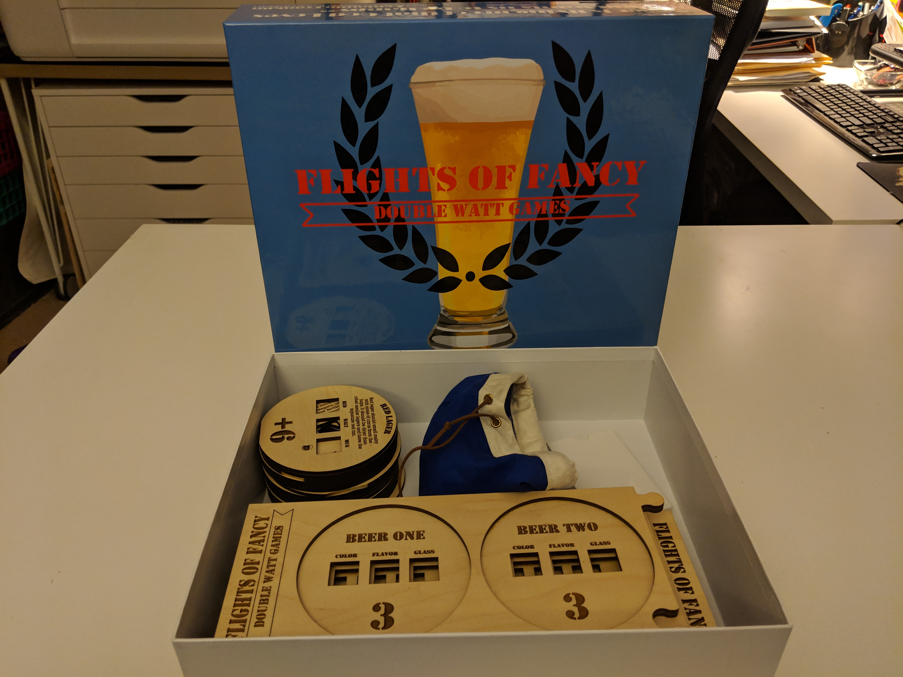
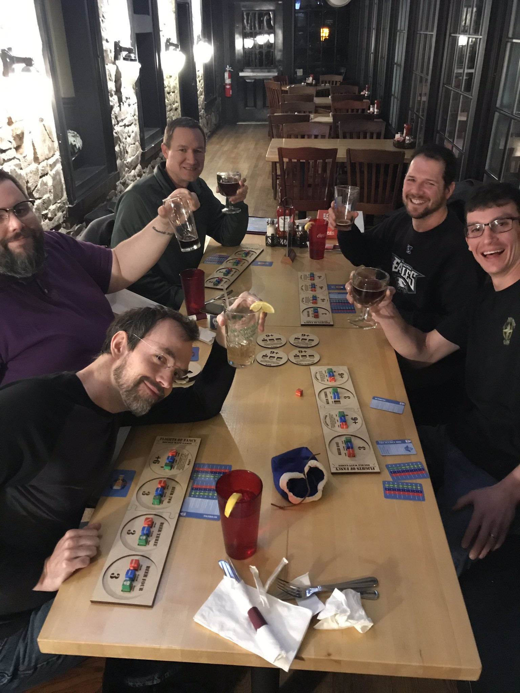


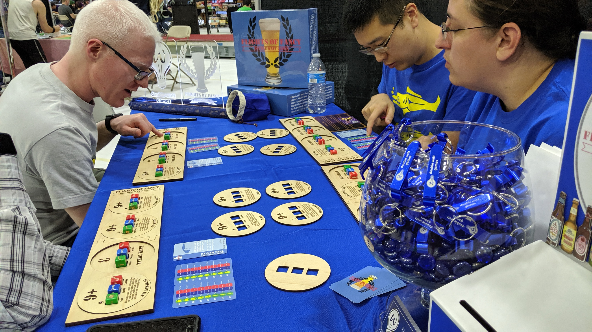